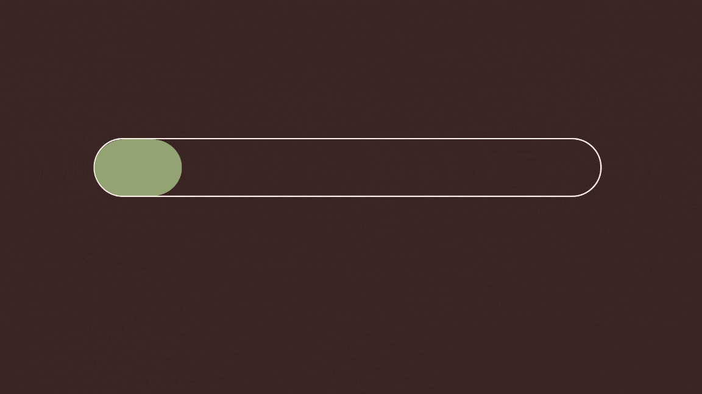

EM CONSTRUÇÃO
Comunicar é mais do que falar — é existir, ocupar espaços, reivindicar narrativas. "Papia", do crioulo cabo-verdiano "falar", representa esse projeto que nasce para amplificar vozes historicamente silenciadas. Aqui, a comunicação se torna ferramenta de mudança. Por meio de mentorias personalizadas e um plano estratégico de conteúdo, apoio pessoas e iniciativas a potencializar suas histórias, conectar-se com novos públicos e transformar sua mensagem em impacto real. Porque não é só dizer — é fazer ecoar. E com o Papia Content, cada voz importa.
